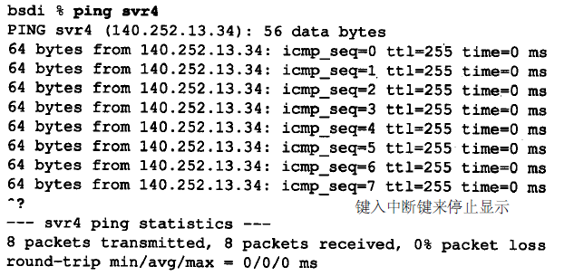

Ping程序
Ping程序目的是为了测试另一台主机是否可达。该程序发送一份ICMP回显请求报文给主机，并等待返回ICMP回显应答
一般来说，如果不能Ping到某台主机，那么就不能Telnet或者FTP到那台主机。反过来，如果不能Telnet到某台主机，那么通常可以用Ping程序来确定问题出在哪里。Ping程序还能测出到这台主机的往返时间，以表明该主机离我们有多远
注意：随着Internet安全意识的增强，出现了提供访问控制清单的路由器和防火墙。一台主机的可达性可能不只取决于IP层是否可达，还取决于使用何种协议以及端口号。Ping程序的运行结果可能显示某台主机不可达，但仍然可以用Telnet远程登录到该台主机的某个特定端口
在本章中，将使用Ping程序作为诊断工具来深入剖析ICMP。Ping还给我们提供了检测IP记录路由和时间戳选项的机会
Ping程序
按照管理，发送回显请求的ping程序被称为客户机，而被ping的主机为服务器。大多数的TCP/IP实现都在内核中直接支持Ping服务器：这种服务器不是一个用户进程（曾经描述过的两种ICMP查询服务：地址掩码和时间戳请求，也都是直接在内核中进行处理的）
ICMP回显请求和回显应答报文如图7-1所示：
回显类型的ICMP查询报文，服务器必须响应标识符和序列号字段。另外，客户发送的选项数据必须回显，假设客户对这些信息都会感兴趣
- 标识符：大部分Unix系统实现中设置为发送进程的ID号。这样即使在同一台主机上同时运行了多个ping程序实例， ping程序也可以识别出返回的信息
- 序列号：从0开始，每发送一次新的回显请求就加1。ping程序打印出返回的每个分组的序列号，可以查看是否有分组丢失、失序或重复。IP是不可靠，无连接的传输协议，因此这三个条件都有可能发生
示例
局域网
在局域网上运行ping程序的结果输出一般有如下格式：

当返回ICMP回显应答时，要打印出序列号和TTL，并计算往返时间（TTL位于IP首部中的生存时间字段）：
- 回显应答是以发送的次序返回的（0，1，2等）
- 通过在ICMP报文数据中存放发送请求的时间值来计算往返时间。当应答返回时，用当前时间减去存放在ICMP报文中的时间值，即是往返时间
- 注意：在发送端bsdi上，往返时间的计算结果都为0 ms。这是因为程序使用的计时器分辨率低的原因。BSD/386版本0.9.4系统只能提供10ms级的计时器
- 输出的第一行包括目的主机的IP地址，尽管指定的是它的名字(svr4)，这说明名字已经经过解析器被转换成IP地址了
本例中的tcpdump输出如图7-2所示：
从发送回显请求到收到回显应答，时间间隔始终为3.7 ms。还可以看到，回显请求大约每隔1秒钟发送一次。通常，第1个往返时间值要比其他的大。这是由于目的端的硬件地址不在ARP高速缓存中。在发送第一个回显请求之前要发送一个ARP请求并接收ARP应答，这需要花费几毫秒的时间。下面的例子说明了这一点：
第1个RTT中多出的3ms很可能就是因为发送ARP请求和接收ARP应答所花费的时间
注意：这个例子运行在sun主机上，它提供的是具有微秒级分辨率的计时器，但是ping程序只能打印出毫秒级的往返时间
广域网
在一个广域网上，结果会有很大的不同。下面的例子是在某个工作日的下午即Internet具有正常通信量时的运行结果：
这里，序列号为1、2、3、4、6、10、11、12和13的回显请求或回显应答在某个地方丢失了。另外，往返时间发生了很大的变化
通过广域网还有可能看到重复的分组（即相同序列号的分组被打印两次或更多次），失序的分组（序列号为N+1的分组在序列号为N的分组之前被打印）